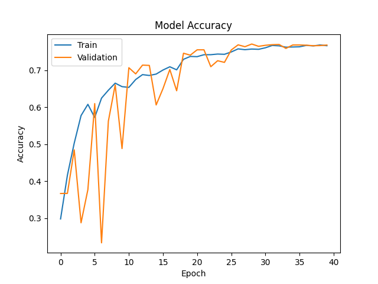

        <html>
        <head><title>Model Summary - 2024-04-10 14:21:36</title></head>
        <body>
        <h1>Model Configuration</h1>
        <pre>model:
  compile:
    learning_rate: 0.01
    optimizer: SGD
    optimizer_name: adam
  data:
    color_layers: 1
    color_mode: grayscale
    img_height: 48
    img_width: 48
    use_data_loaders: true
  layers:
  - filters: 64
    kernel_size:
    - 2
    - 2
    padding: same
    type: Conv2D
  - type: BatchNormalization
  - alpha: 0.1
    type: LeakyReLU
  - pool_size:
    - 2
    - 2
    type: MaxPooling2D
  - filters: 128
    kernel_size:
    - 2
    - 2
    padding: same
    type: Conv2D
  - type: BatchNormalization
  - alpha: 0.1
    type: LeakyReLU
  - pool_size:
    - 2
    - 2
    type: MaxPooling2D
  - filters: 256
    kernel_size:
    - 2
    - 2
    padding: same
    type: Conv2D
  - type: BatchNormalization
  - alpha: 0.1
    type: LeakyReLU
  - pool_size:
    - 2
    - 2
    type: MaxPooling2D
  - filters: 512
    kernel_size:
    - 2
    - 2
    padding: same
    type: Conv2D
  - type: BatchNormalization
  - alpha: 0.1
    type: LeakyReLU
  - pool_size:
    - 2
    - 2
    type: MaxPooling2D
  - filters: 128
    kernel_size:
    - 2
    - 2
    padding: same
    type: Conv2D
  - type: BatchNormalization
  - alpha: 0.1
    type: LeakyReLU
  - pool_size:
    - 2
    - 2
    type: MaxPooling2D
  - type: Flatten
  - activation: relu
    type: Dense
    units: 512
  - activation: relu
    type: Dense
    units: 128
  - type: Dense
    units: 64
  - type: BatchNormalization
  - type: ReLU
  - activation: softmax
    type: Dense
    units: 4
  train:
    batch_size: 128
    epochs: 40
    patience: 7
</pre>
        <h1>Model Summary</h1>
        <pre>Model: "sequential"
┏━━━━━━━━━━━━━━━━━━━━━━━━━━━━━━━━━━━━━━┳━━━━━━━━━━━━━━━━━━━━━━━━━━━━━┳━━━━━━━━━━━━━━━━━┓
┃ Layer (type)                         ┃ Output Shape                ┃         Param # ┃
┡━━━━━━━━━━━━━━━━━━━━━━━━━━━━━━━━━━━━━━╇━━━━━━━━━━━━━━━━━━━━━━━━━━━━━╇━━━━━━━━━━━━━━━━━┩
│ conv2d (Conv2D)                      │ (None, 48, 48, 64)          │             320 │
├──────────────────────────────────────┼─────────────────────────────┼─────────────────┤
│ batch_normalization                  │ (None, 48, 48, 64)          │             256 │
│ (BatchNormalization)                 │                             │                 │
├──────────────────────────────────────┼─────────────────────────────┼─────────────────┤
│ leaky_re_lu (LeakyReLU)              │ (None, 48, 48, 64)          │               0 │
├──────────────────────────────────────┼─────────────────────────────┼─────────────────┤
│ max_pooling2d (MaxPooling2D)         │ (None, 24, 24, 64)          │               0 │
├──────────────────────────────────────┼─────────────────────────────┼─────────────────┤
│ conv2d_1 (Conv2D)                    │ (None, 24, 24, 128)         │          32,896 │
├──────────────────────────────────────┼─────────────────────────────┼─────────────────┤
│ batch_normalization_1                │ (None, 24, 24, 128)         │             512 │
│ (BatchNormalization)                 │                             │                 │
├──────────────────────────────────────┼─────────────────────────────┼─────────────────┤
│ leaky_re_lu_1 (LeakyReLU)            │ (None, 24, 24, 128)         │               0 │
├──────────────────────────────────────┼─────────────────────────────┼─────────────────┤
│ max_pooling2d_1 (MaxPooling2D)       │ (None, 12, 12, 128)         │               0 │
├──────────────────────────────────────┼─────────────────────────────┼─────────────────┤
│ conv2d_2 (Conv2D)                    │ (None, 12, 12, 256)         │         131,328 │
├──────────────────────────────────────┼─────────────────────────────┼─────────────────┤
│ batch_normalization_2                │ (None, 12, 12, 256)         │           1,024 │
│ (BatchNormalization)                 │                             │                 │
├──────────────────────────────────────┼─────────────────────────────┼─────────────────┤
│ leaky_re_lu_2 (LeakyReLU)            │ (None, 12, 12, 256)         │               0 │
├──────────────────────────────────────┼─────────────────────────────┼─────────────────┤
│ max_pooling2d_2 (MaxPooling2D)       │ (None, 6, 6, 256)           │               0 │
├──────────────────────────────────────┼─────────────────────────────┼─────────────────┤
│ conv2d_3 (Conv2D)                    │ (None, 6, 6, 512)           │         524,800 │
├──────────────────────────────────────┼─────────────────────────────┼─────────────────┤
│ batch_normalization_3                │ (None, 6, 6, 512)           │           2,048 │
│ (BatchNormalization)                 │                             │                 │
├──────────────────────────────────────┼─────────────────────────────┼─────────────────┤
│ leaky_re_lu_3 (LeakyReLU)            │ (None, 6, 6, 512)           │               0 │
├──────────────────────────────────────┼─────────────────────────────┼─────────────────┤
│ max_pooling2d_3 (MaxPooling2D)       │ (None, 3, 3, 512)           │               0 │
├──────────────────────────────────────┼─────────────────────────────┼─────────────────┤
│ conv2d_4 (Conv2D)                    │ (None, 3, 3, 128)           │         262,272 │
├──────────────────────────────────────┼─────────────────────────────┼─────────────────┤
│ batch_normalization_4                │ (None, 3, 3, 128)           │             512 │
│ (BatchNormalization)                 │                             │                 │
├──────────────────────────────────────┼─────────────────────────────┼─────────────────┤
│ leaky_re_lu_4 (LeakyReLU)            │ (None, 3, 3, 128)           │               0 │
├──────────────────────────────────────┼─────────────────────────────┼─────────────────┤
│ max_pooling2d_4 (MaxPooling2D)       │ (None, 1, 1, 128)           │               0 │
├──────────────────────────────────────┼─────────────────────────────┼─────────────────┤
│ flatten (Flatten)                    │ (None, 128)                 │               0 │
├──────────────────────────────────────┼─────────────────────────────┼─────────────────┤
│ dense (Dense)                        │ (None, 512)                 │          66,048 │
├──────────────────────────────────────┼─────────────────────────────┼─────────────────┤
│ dense_1 (Dense)                      │ (None, 128)                 │          65,664 │
├──────────────────────────────────────┼─────────────────────────────┼─────────────────┤
│ dense_2 (Dense)                      │ (None, 64)                  │           8,256 │
├──────────────────────────────────────┼─────────────────────────────┼─────────────────┤
│ batch_normalization_5                │ (None, 64)                  │             256 │
│ (BatchNormalization)                 │                             │                 │
├──────────────────────────────────────┼─────────────────────────────┼─────────────────┤
│ re_lu (ReLU)                         │ (None, 64)                  │               0 │
├──────────────────────────────────────┼─────────────────────────────┼─────────────────┤
│ dense_3 (Dense)                      │ (None, 4)                   │             260 │
└──────────────────────────────────────┴─────────────────────────────┴─────────────────┘
 Total params: 1,096,452 (4.18 MB)
 Trainable params: 1,094,148 (4.17 MB)
 Non-trainable params: 2,304 (9.00 KB)
</pre>
        <h2>Test Accuracy</h2>
        <p>
1/1 ━━━━━━━━━━━━━━━━━━━━ 0s 27ms/step - accuracy: 0.8281 - loss: 0.5063
1/1 ━━━━━━━━━━━━━━━━━━━━ 0s 28ms/step - accuracy: 0.8281 - loss: 0.5063

1/1 ━━━━━━━━━━━━━━━━━━━━ 0s 313ms/step
1/1 ━━━━━━━━━━━━━━━━━━━━ 0s 313ms/step
</p>
        <h2>Accuracy Plot</h2>
        
        <h2>Classification Report</h2>
        <pre>              precision    recall  f1-score   support

       happy       0.90      0.84      0.87        32
     neutral       0.69      0.78      0.74        32
         sad       0.77      0.72      0.74        32
    surprise       0.97      0.97      0.97        32

    accuracy                           0.83       128
   macro avg       0.83      0.83      0.83       128
weighted avg       0.83      0.83      0.83       128

</pre>
        <h2>History</h2>
        <pre>Epoch 1: accuracy: 0.2978, loss: 1.3762, val_accuracy: 0.3667, val_loss: 1.6377, learning_rate: 0.0100
Epoch 2: accuracy: 0.4160, loss: 1.2225, val_accuracy: 0.3669, val_loss: 1.5210, learning_rate: 0.0100
Epoch 3: accuracy: 0.5029, loss: 1.0921, val_accuracy: 0.4846, val_loss: 1.3446, learning_rate: 0.0100
Epoch 4: accuracy: 0.5774, loss: 0.9788, val_accuracy: 0.2875, val_loss: 2.5340, learning_rate: 0.0100
Epoch 5: accuracy: 0.6078, loss: 0.9304, val_accuracy: 0.3771, val_loss: 1.4793, learning_rate: 0.0100
Epoch 6: accuracy: 0.5724, loss: 0.9942, val_accuracy: 0.6098, val_loss: 0.9095, learning_rate: 0.0100
Epoch 7: accuracy: 0.6247, loss: 0.8888, val_accuracy: 0.2333, val_loss: 3.5190, learning_rate: 0.0100
Epoch 8: accuracy: 0.6460, loss: 0.8538, val_accuracy: 0.5624, val_loss: 1.1259, learning_rate: 0.0100
Epoch 9: accuracy: 0.6651, loss: 0.8019, val_accuracy: 0.6604, val_loss: 0.8482, learning_rate: 0.0100
Epoch 10: accuracy: 0.6557, loss: 0.8289, val_accuracy: 0.4882, val_loss: 1.1558, learning_rate: 0.0100
Epoch 11: accuracy: 0.6537, loss: 0.8331, val_accuracy: 0.7069, val_loss: 0.7339, learning_rate: 0.0100
Epoch 12: accuracy: 0.6749, loss: 0.7892, val_accuracy: 0.6902, val_loss: 0.7606, learning_rate: 0.0100
Epoch 13: accuracy: 0.6882, loss: 0.7539, val_accuracy: 0.7139, val_loss: 0.6932, learning_rate: 0.0100
Epoch 14: accuracy: 0.6859, loss: 0.7465, val_accuracy: 0.7131, val_loss: 0.7176, learning_rate: 0.0100
Epoch 15: accuracy: 0.6897, loss: 0.7484, val_accuracy: 0.6062, val_loss: 0.8981, learning_rate: 0.0100
Epoch 16: accuracy: 0.7006, loss: 0.7245, val_accuracy: 0.6504, val_loss: 0.7926, learning_rate: 0.0100
Epoch 17: accuracy: 0.7094, loss: 0.7033, val_accuracy: 0.7020, val_loss: 0.7875, learning_rate: 0.0100
Epoch 18: accuracy: 0.7012, loss: 0.7187, val_accuracy: 0.6446, val_loss: 0.8741, learning_rate: 0.0100
Epoch 19: accuracy: 0.7296, loss: 0.6685, val_accuracy: 0.7460, val_loss: 0.6334, learning_rate: 0.0020
Epoch 20: accuracy: 0.7374, loss: 0.6419, val_accuracy: 0.7408, val_loss: 0.6510, learning_rate: 0.0020
Epoch 21: accuracy: 0.7368, loss: 0.6412, val_accuracy: 0.7553, val_loss: 0.6055, learning_rate: 0.0020
Epoch 22: accuracy: 0.7420, loss: 0.6354, val_accuracy: 0.7553, val_loss: 0.6099, learning_rate: 0.0020
Epoch 23: accuracy: 0.7421, loss: 0.6371, val_accuracy: 0.7097, val_loss: 0.7373, learning_rate: 0.0020
Epoch 24: accuracy: 0.7438, loss: 0.6330, val_accuracy: 0.7257, val_loss: 0.6600, learning_rate: 0.0020
Epoch 25: accuracy: 0.7431, loss: 0.6237, val_accuracy: 0.7213, val_loss: 0.7073, learning_rate: 0.0020
Epoch 26: accuracy: 0.7495, loss: 0.6160, val_accuracy: 0.7549, val_loss: 0.6311, learning_rate: 0.0020
Epoch 27: accuracy: 0.7578, loss: 0.6048, val_accuracy: 0.7687, val_loss: 0.5930, learning_rate: 0.0004
Epoch 28: accuracy: 0.7556, loss: 0.6027, val_accuracy: 0.7637, val_loss: 0.5972, learning_rate: 0.0004
Epoch 29: accuracy: 0.7574, loss: 0.5945, val_accuracy: 0.7709, val_loss: 0.5841, learning_rate: 0.0004
Epoch 30: accuracy: 0.7566, loss: 0.5889, val_accuracy: 0.7647, val_loss: 0.5958, learning_rate: 0.0004
Epoch 31: accuracy: 0.7608, loss: 0.5919, val_accuracy: 0.7675, val_loss: 0.5876, learning_rate: 0.0004
Epoch 32: accuracy: 0.7671, loss: 0.5848, val_accuracy: 0.7691, val_loss: 0.5914, learning_rate: 0.0004
Epoch 33: accuracy: 0.7660, loss: 0.5936, val_accuracy: 0.7697, val_loss: 0.5862, learning_rate: 0.0004
Epoch 34: accuracy: 0.7625, loss: 0.5914, val_accuracy: 0.7591, val_loss: 0.6058, learning_rate: 0.0004
Epoch 35: accuracy: 0.7629, loss: 0.5795, val_accuracy: 0.7683, val_loss: 0.5848, learning_rate: 0.0001
Epoch 36: accuracy: 0.7635, loss: 0.5858, val_accuracy: 0.7683, val_loss: 0.5847, learning_rate: 0.0001
Epoch 37: accuracy: 0.7673, loss: 0.5849, val_accuracy: 0.7677, val_loss: 0.5864, learning_rate: 0.0001
Epoch 38: accuracy: 0.7659, loss: 0.5709, val_accuracy: 0.7663, val_loss: 0.5864, learning_rate: 0.0001
Epoch 39: accuracy: 0.7684, loss: 0.5818, val_accuracy: 0.7667, val_loss: 0.5899, learning_rate: 0.0001
Epoch 40: accuracy: 0.7664, loss: 0.5815, val_accuracy: 0.7681, val_loss: 0.5860, learning_rate: 0.0000
</pre>
        <h2>Confusion Matrix</h2>
        
        <h2>Predicted Images</h2>
        
        </body>
        </html>
        